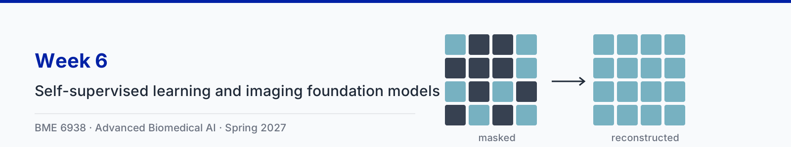

Week 6: Self-supervised learning and imaging foundation models
Papers for Thursday
Animation clips
Each clip comes in two versions. The narrated version has an AI-generated voice and captions; turn them on with the CC button. The silent version is the same animation with its on-screen captions only.
Everything for this week
The Week 6 folder in the repository ↗, with the animation sources, the slides and the session guide.